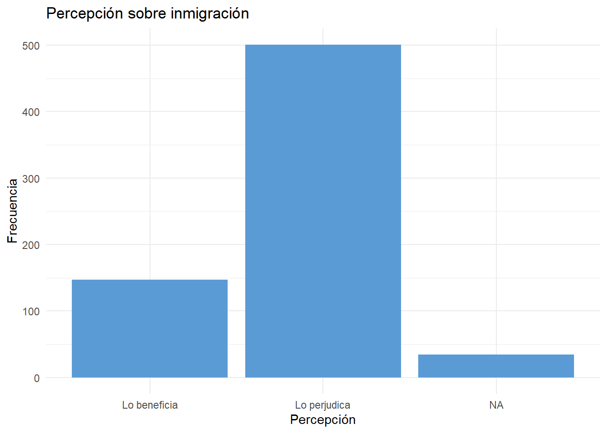
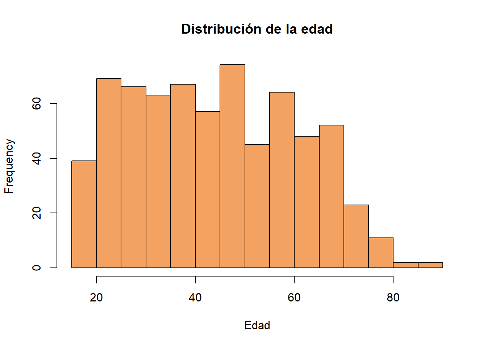
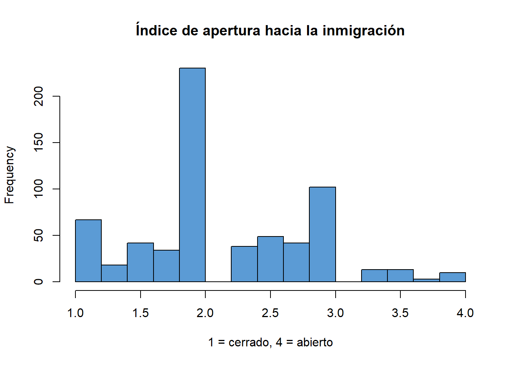
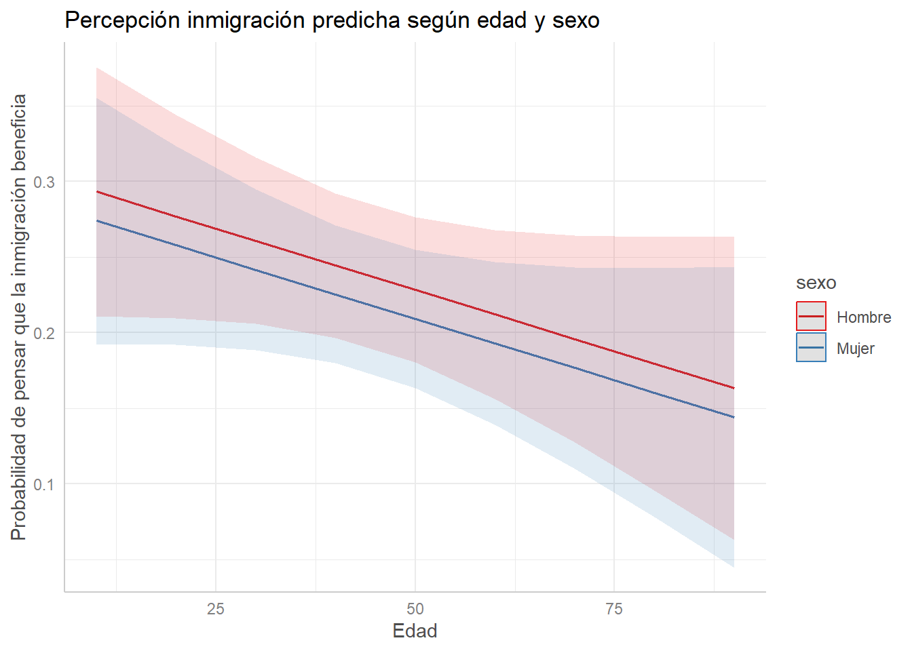

Percepciones sobre inmigración según edad, sexo y región en Chile (2020)
Author
Fernanda Duarte, Maite Rojas y Antonia Ríos
Introducción
La percepción sobre la inmigración es un tema de alta relevancia en las sociedades contemporáneas, especialmente en países como Chile donde los flujos migratorios han crecido considerablemente en la última década. En este trabajo se analiza cómo varían las percepciones sobre inmigración según tres variables clave: edad, sexo y región de residencia. La fuente de datos utilizada es la Encuesta Latinobarómetro 2020, específicamente la sección correspondiente a Chile. Este estudio se basa en la variable P38, que pregunta si la inmigración beneficia o perjudica al país, y se busca identificar patrones de asociación entre esta percepción y las características sociodemográficas mencionadas.
Análisis descriptivo
library(dplyr)
Adjuntando el paquete: 'dplyr'
The following objects are masked from 'package:stats':
filter, lag
The following objects are masked from 'package:base':
intersect, setdiff, setequal, union
library(ggplot2)# Cargar base procesadadatos <-readRDS("procesamiento/chile_procesado.rds")# Frecuencia percepción inmigracióntable(datos$percepcion_inmigracion)
Lo beneficia Lo perjudica
147 501
# Gráfico percepciónggplot(datos, aes(x = percepcion_inmigracion)) +geom_bar(fill ="#5B9BD5") +theme_minimal() +labs(title ="Percepción sobre inmigración", x ="Percepción", y ="Frecuencia")

# Tabla sexotable(datos$sexo)
Hombre Mujer
318 364
# Histograma edadhist(datos$edad, main ="Distribución de la edad", xlab ="Edad", col ="#F4A261")

Asociación entre variables
# Percepción vs Sexotable(datos$percepcion_inmigracion, datos$sexo)
Hombre Mujer
Lo beneficia 73 74
Lo perjudica 235 266
# Promedio de edad por percepcióndatos %>%group_by(percepcion_inmigracion) %>%summarise(promedio_edad =mean(edad, na.rm =TRUE))
# A tibble: 3 × 2
percepcion_inmigracion promedio_edad
<fct> <dbl>
1 Lo beneficia 42.7
2 Lo perjudica 45.2
3 <NA> 43.9
# Correlación percepción ~ edadlibrary(Hmisc)
Adjuntando el paquete: 'Hmisc'
The following objects are masked from 'package:dplyr':
src, summarize
The following objects are masked from 'package:base':
format.pval, units
# Crear versión numérica de la percepción (beneficia = 1, perjudica = 0)datos$percepcion_num <-ifelse(datos$percepcion_inmigracion =="Lo beneficia", 1,ifelse(datos$percepcion_inmigracion =="Lo perjudica", 0, NA))# Correlación con edadrcorr(as.numeric(datos$edad), datos$percepcion_num, type ="pearson")
x y
x 1.00 -0.06
y -0.06 1.00
n
x y
x 682 648
y 648 648
P
x y
x 0.104
y 0.104
Construcción de índice de apertura hacia la inmigración
library(psych)
Adjuntando el paquete: 'psych'
The following object is masked from 'package:Hmisc':
describe
The following objects are masked from 'package:ggplot2':
%+%, alpha
# Seleccionar preguntas P37N A–D y renombrar para claridadindice_items <- datos %>%select(P37NA, P37NB, P37NC, P37ND) %>%rename(inmigrantes_extraregion = P37NA,inmigrantes_latinoamerica = P37NB,inmigrantes_haiti = P37NC,inmigrantes_venezuela = P37ND )# Convertir a numérico e invertir escalaindice_items <-mutate_all(indice_items, as.numeric)indice_items_invertido <-5- indice_items# Alfa de Cronbachalpha(indice_items_invertido)
# Crear índice promediodatos$indice_apertura <-rowMeans(indice_items_invertido, na.rm =TRUE)# Histograma del índicehist(datos$indice_apertura,main ="Índice de apertura hacia la inmigración",xlab ="1 = cerrado, 4 = abierto",col ="#5B9BD5")

Asociación del índice con otras variables
# Índice según sexodatos %>%group_by(sexo) %>%summarise(promedio_indice =mean(indice_apertura, na.rm =TRUE))
# A tibble: 2 × 2
sexo promedio_indice
<fct> <dbl>
1 Hombre 2.19
2 Mujer 2.17
# Índice según percepcióndatos %>%group_by(percepcion_inmigracion) %>%summarise(promedio_indice =mean(indice_apertura, na.rm =TRUE))
# A tibble: 3 × 2
percepcion_inmigracion promedio_indice
<fct> <dbl>
1 Lo beneficia 2.97
2 Lo perjudica 1.93
3 <NA> 2.58
# Correlación índice ~ edadrcorr(as.numeric(datos$edad), datos$indice_apertura, type ="pearson")
x y
x 1.00 -0.07
y -0.07 1.00
n
x y
x 682 661
y 661 661
P
x y
x 0.0826
y 0.0826
Modelos de regresión lineal
library(broom)library(modelsummary)
Adjuntando el paquete: 'modelsummary'
The following object is masked from 'package:psych':
SD
The following object is masked from 'package:Hmisc':
Mean
# Modelo 1: percepción ~ edadmodelo1 <-lm(percepcion_num ~ edad, data = datos)# Modelo 2: percepción ~ edad + sexomodelo2 <-lm(percepcion_num ~ edad + sexo, data = datos)# Modelo 3: percepción ~ edad + sexo + regionmodelo3 <-lm(percepcion_num ~ edad + sexo + region, data = datos)# Tabla comparativamodelsummary(list("Modelo 1"= modelo1, "Modelo 2"= modelo2, "Modelo 3"= modelo3), stars =TRUE, statistic ="std.error")
Modelo 1
Modelo 2
Modelo 3
+ p < 0.1, * p < 0.05, ** p < 0.01, *** p < 0.001
(Intercept)
0.299***
0.309***
0.323***
(0.047)
(0.050)
(0.053)
edad
-0.002
-0.002
-0.002*
(0.001)
(0.001)
(0.001)
sexoMujer
-0.019
-0.004
(0.033)
(0.031)
regionCL × I Región × Tarapacá
-0.239+
(0.135)
regionCL × II Región × Antofagasta
0.124
(0.080)
regionCL × III Región × Atacama
-0.170+
(0.096)
regionCL × IV Región × Coquimbo
-0.214*
(0.088)
regionCL × V Región × Valparaíso
0.224***
(0.053)
regionCL × VI Región × Libertador Bernardo O´Higgins
0.078
(0.084)
regionCL × VII Región × Maule
-0.040
(0.074)
regionCL × VIII Región × Bío-Bío
-0.099+
(0.057)
regionCL × IX Región × La Araucanía
-0.078
(0.065)
regionCL × X Región × Los Lagos
0.227**
(0.077)
regionCL × XI Región × Aysén del General Carlos Ibáñez del Campo
0.855*
(0.398)
regionCL × XII Región × Magallanes y la Antártica Chilena
0.672***
(0.142)
regionCL × XIV Región × Los Ríos
-0.243*
(0.095)
regionCL × XV Región × Arica y Parinacota
-0.100
(0.134)
regionCL × Región de Ñuble
-0.212+
(0.122)
Num.Obs.
648
648
648
R2
0.004
0.005
0.132
R2 Adj.
0.003
0.002
0.109
AIC
714.3
715.9
657.2
BIC
727.7
733.8
742.2
Log.Lik.
-354.145
-353.975
-309.617
RMSE
0.42
0.42
0.39
Gráfico de valores predichos
library(ggeffects)# Predicción percepción ~ edad + sexogg <-ggpredict(modelo2, terms =c("edad", "sexo"))# Gráficoplot(gg) +labs(title ="Percepción inmigración predicha según edad y sexo",x ="Edad", y ="Probabilidad de pensar que la inmigración beneficia")

Conclusiones
Los resultados muestran que existen diferencias relevantes en la percepción de la inmigración según sexo y edad. Las personas mayores tienden a tener una percepción más negativa, mientras que las más jóvenes presentan mayor apertura. También se observan diferencias por sexo, donde las mujeres tienden a tener posturas ligeramente más críticas hacia la inmigración.
La estimación de modelos de regresión lineal permite observar que la edad tiene un efecto negativo sobre la probabilidad de percibir la inmigración como positiva. Este efecto se mantiene incluso al controlar por sexo y región. Además, se visualiza cómo varía esa percepción predicha según sexo, a través de un gráfico de efectos marginales.
El índice de apertura también muestra relaciones similares, aunque no fue usado como variable dependiente en esta etapa. El análisis confirma las hipótesis planteadas en la investigación y cumple con los objetivos metodológicos del trabajo.